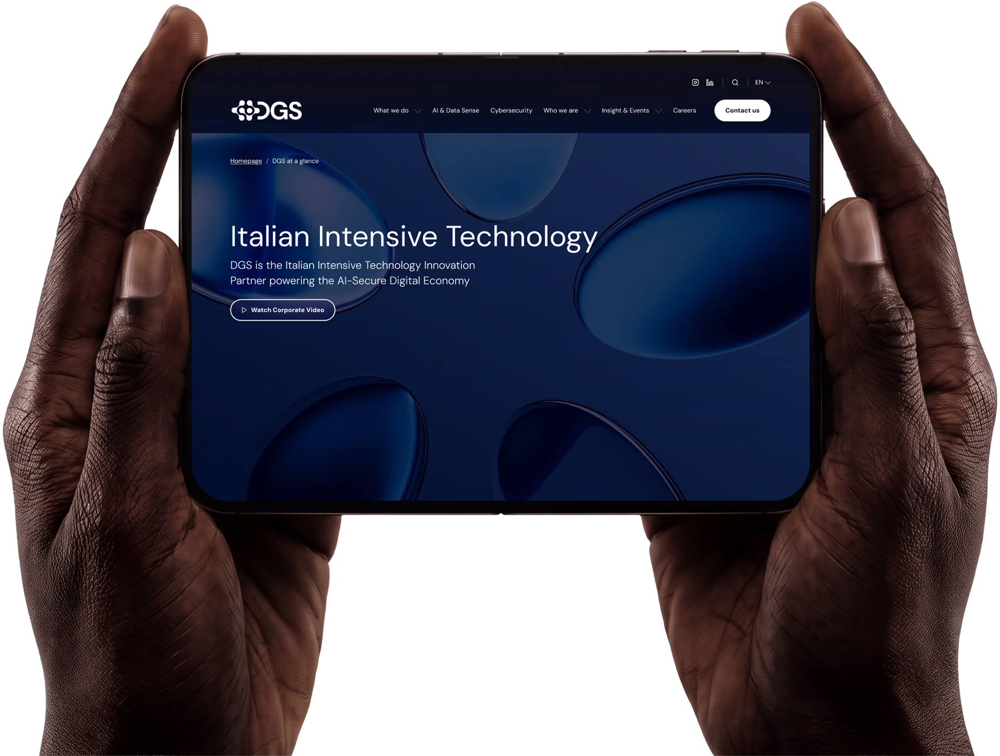
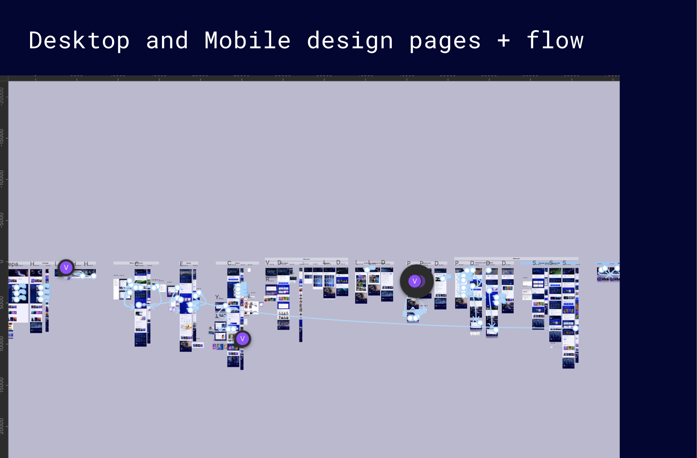
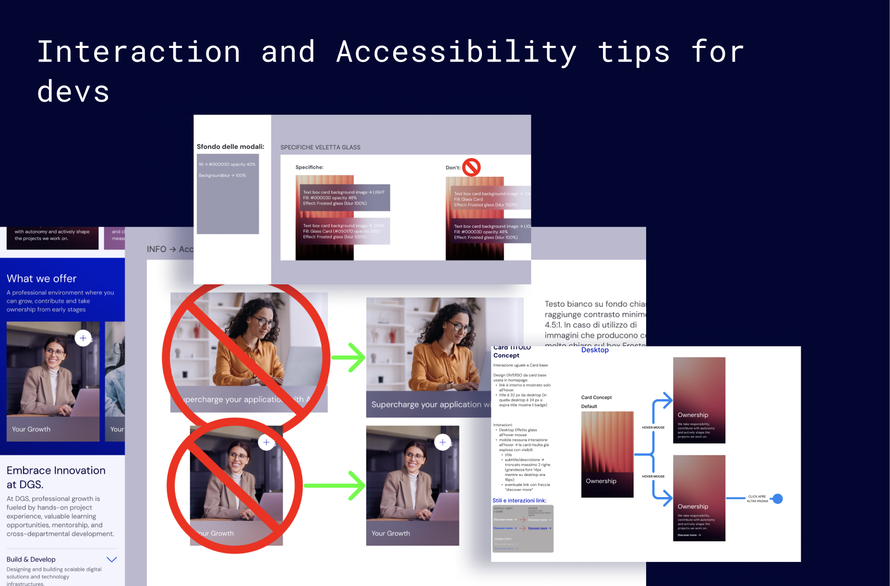
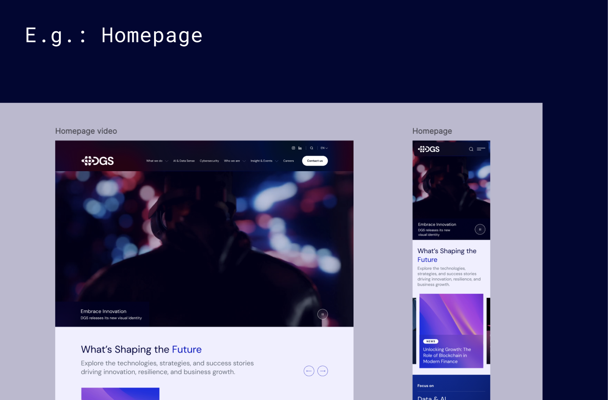
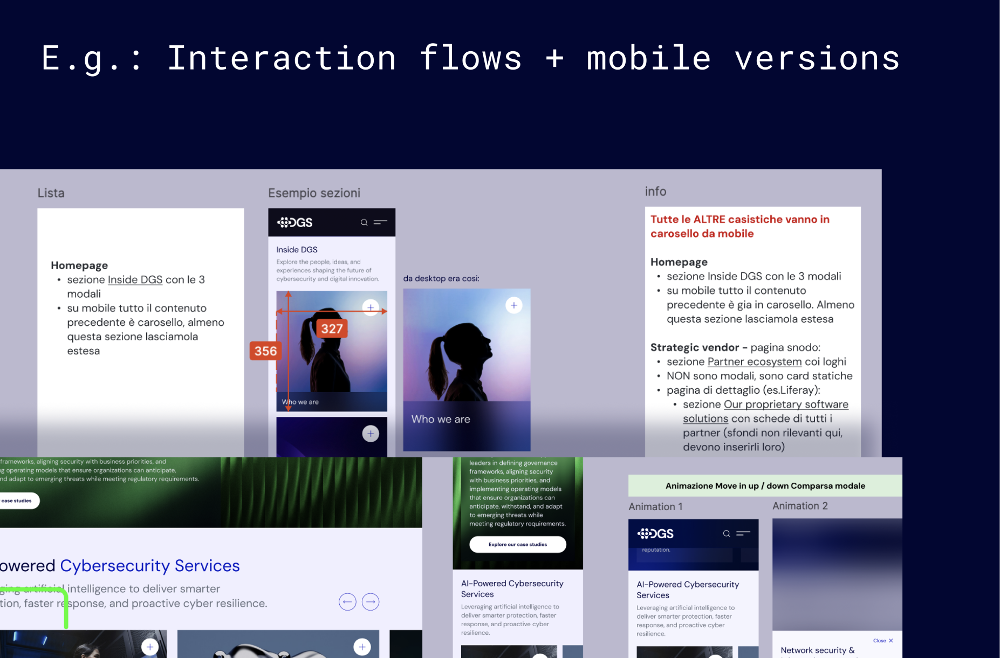

DGS Company - A new vision
Client: DGS S.p.A., Italian technology group, parent company of SMC
Team: Scrum design team, me as UX/UI designer, accessibility specialist, and design-to-dev facilitator, with marketing and sustainability stakeholders in weekly sessions
Scope: Designing high-fidelity website pages; defining the last pages flows; ensuring the website is accessible to all users; writing components documentation for handoff process
Timeline: March - September 2026 (phase 2)
Outcome: New 2026 brand kit applied across the site; Governance, Sustainability & Compliance section turned from a 6,800-word requirements spec into a navigable prototype of 246 links; component documentation delivered for handoff

Context
DGS new visual identity reflects the company's evolution and its commitment to innovation. The website aims to tell the story of the Italian Intensive Technology Innovation Partner, which is powering the AI-Secure Digital Economy.

Workflow and collaboration
The redesign of dgsspa.com started in spring 2026. I joined during the second phase to help accelerate delivery under tight deadlines and resource constraintss. The tasks were organised following the Scrum framework:
- Daily Syncs with UX/UI team to align on progress and maintain design system consistency.
- Weekly stakeholder meetings: we interfaced with the DGS Marketing team to balance business goals with UX and accessibility principles
I had the opportunity to place a strong focus on optimizing the developer handoff experience. This final phase was particularly vulnerable, since we worked under strict deadlines and could lose no time. Within the Figma design files, I created a dedicated and structured handoff section, tailored specifically for the dev team and showing the clear documentation with component anatomy, states, variants, and interactive behaviors, accompanied by clear visual "Do's and Don'ts" guidelines and useful Accessibility tips. This meticulous approach removed the ambiguity, prevented implementation errors, and streamlined the overall development process during a high-pressure launch window.


What I learnt:
- Working in such a fast and rapid environment, I learned the difficult art of making effective design decisions under high pressure.
- I successfully communicated the value of UX and accessibility to non-designers, addressing resistance and finding balanced solutions.
- I built strong working relationships with team members from different subsidiaries within the DGS group
- I proactively highlighted and integrated accessibility considerations into component design where I could, despite tight project deadlines.
- I extensively integrated AI tools into my design workflow, leveraging generative AI for brand-aligned visuals, text generation for realistic interface copy, and AI-driven ideation to brainstorm UX solutions for complex components.
